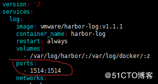
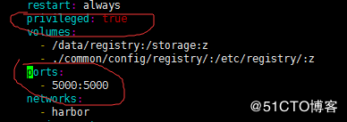
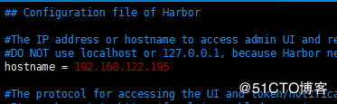
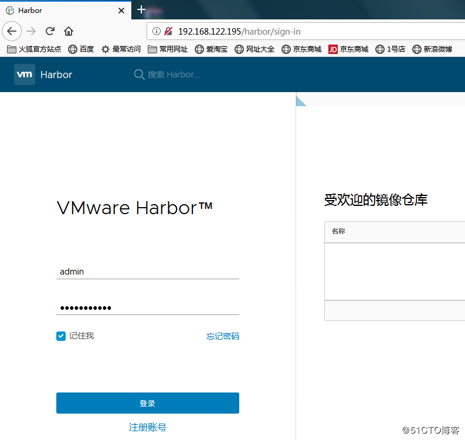

一：介绍
- Harbor，是一个英文单词，意思是港湾，港湾是干什么的呢，就是停放货物的，而货物呢，是装在集装箱中的，说到集装箱，就不得不提到Docker容器，因为docker容器的技术正是借鉴了集装箱的原理。所以，Harbor正是一个用于存储Docker镜像的企业级Registry服务。
- Registry是Dcoker官方的一个私有仓库镜像，可以将本地的镜像打标签进行标记然后push到以Registry起的容器的私有仓库中。企业可以根据自己的需求，使用Dokcerfile生成自己的镜像，并推到私有仓库中，这样可以大大提高拉取镜像的效率。
二：Harbor核心组件解释
- Proxy：他是一个nginx的前端代理，代理Harbor的registry,UI, token等服务。
- db：负责储存用户权限、审计日志、Dockerimage分组信息等数据。
- UI：提供图形化界面，帮助用户管理registry上的镜像, 并对用户进行授权。
- jobsevice：jobsevice是负责镜像复制工作的，他和registry通信，从一个registry pull镜像然后push到另一个registry，并记录job_log。
- Adminserver：是系统的配置管理中心附带检查存储用量，ui和jobserver启动时候回需要加载adminserver的配置。
- Registry：镜像仓库，负责存储镜像文件。
- Log：为了帮助监控Harbor运行，负责收集其他组件的log，供日后进行分析。
三：Harbor和Registry的比较
Harbor和Registry都是Docker的镜像仓库，但是Harbor作为更多企业的选择，是因为相比较于Regisrty来说，它具有很多的优势。
1.提供分层传输机制，优化网络传输
Docker镜像是是分层的，而如果每次传输都使用全量文件(所以用FTP的方式并不适合)，显然不经济。必须提供识别分层传输的机制，以层的UUID为标识，确定传输的对象。
2.提供WEB界面，优化用户体验
只用镜像的名字来进行上传下载显然很不方便，需要有一个用户界面可以支持登陆、搜索功能，包括区分公有、私有镜像。
3.支持水平扩展集群
当有用户对镜像的上传下载操作集中在某服务器，需要对相应的访问压力作分解。
4.良好的安全机制
企业中的开发团队有很多不同的职位，对于不同的职位人员，分配不同的权限，具有更好的安全性。
5.Harbor提供了基于角色的访问控制机制，并通过项目来对镜像进行组织和访问权限的控制。kubernetes中通过namespace来对资源进行隔离，在企业级应用场景中，通过将两者进行结合可以有效将kubernetes使用的镜像资源进行管理和访问控制，增强镜像使用的安全性。尤其是在多租户场景下，可以通过租户、namespace和项目相结合的方式来实现对多租户镜像资源的管理和访问控制。
四：Harbor简单部署
1.安装docker-compose
[root@node03 ~]# yum install python-pip;pip install docker-compose
2.下载Harbor离线包
https://github.com/vmware/harbor/releases
安装有两种方式，一种是off-line ，一种是on-line，即离线和在线安装，离线安装需要下载的安装包较大，在线安装下载的安装包很小，课题根据自己的情况选择，我选择的是1.1.1版本
3.解压，进入安装包
[root@node03 ~]# tar -xvf harbor-online-installer-v1.1.1.tgz ; cd harbor
4.修改docker-compose.notary.yml和harbor.cfg文件
[root@node03 harbor]# vim docker-compose.yml


[root@node03 harbor]# vim harbor.cfg

5.执行./prepare,更新一下配置文件
[root@node03 harbor]# ./prepare
6.执行./install.sh，开始安装并启动
[root@node03 harbor]# ./install.sh
7.在火狐浏览器中访问测试，此处的用户名默认为admin，密码在habor.cfg中，可以自己设置。



Ctrl+Enter 发布
发布
取消